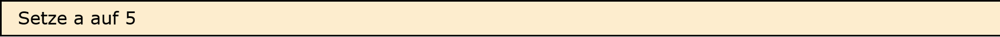
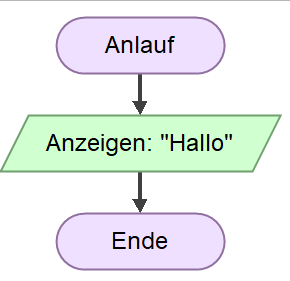
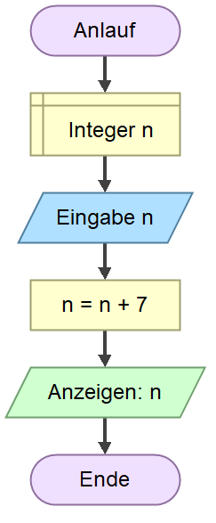
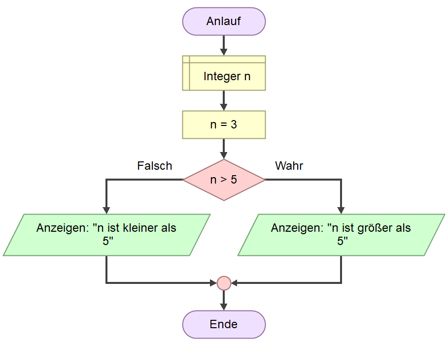
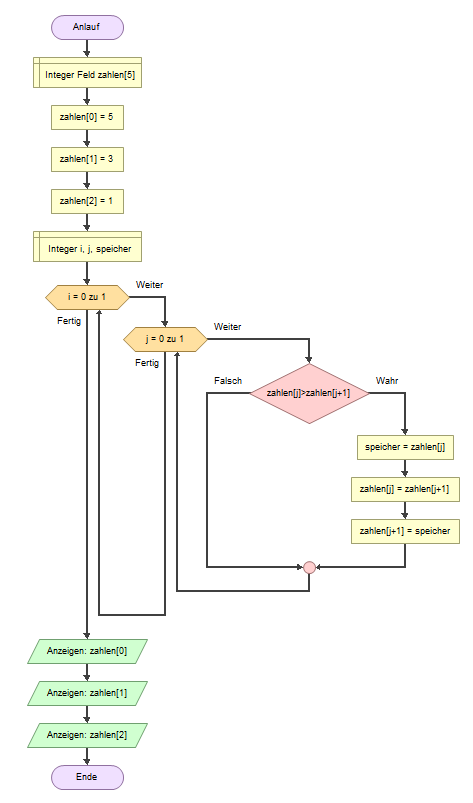

Überblick › LB 2/3 Programmieren und Algorithmen
2.2.6 Darstellung von Algorithmen (Modellierungshilfen)
Bevor ein größeres Programm entsteht, wird der Ablauf meist geplant – so wie ein Architekt erst einen Bauplan zeichnet. Für Algorithmen gibt es dafür zwei genormte grafische Darstellungen.
Struktogramm
Struktogramme sind grafische Darstellungen, die in der Softwareentwicklung verwendet werden, um den logischen Ablauf von Algorithmen und Programmen zu visualisieren. Sie bieten eine klare und übersichtliche Möglichkeit, den Programmablauf zu planen, zu dokumentieren und zu kommunizieren. Struktogramme helfen Entwicklerinnen und Entwicklern, den logischen Aufbau eines Algorithmus zu verstehen, bevor sie den eigentlichen Programmcode schreiben. Sie bestehen aus rechteckigen Symbolen, die ineinander geschachtelt werden.
Elemente in Struktogrammen:



Beispiel 2 komplex
Ausgangssituation: Bubblesort mit zwei geschachtelten Zählschleifen und einer Verzweigung

- Von außen nach innen lesen: äußere Zählschleife → innere Zählschleife → Verzweigung → Tausch. Warum: Die Einrückung der Blöcke zeigt die Schachtelung. Was weiter innen steht, wird öfter ausgeführt.
- Ungenauigkeiten erkennen: In Abb. 6 heißt die Zählvariable der äußeren Schleife versehentlich j; gemeint ist i. Die Startwerte fehlen: Beide Schleifen beginnen bei 0. Die Obergrenzen sind wie bei
rangeausschließlich gemeint. Warum wichtig: Ein Struktogramm ist nur so eindeutig wie seine Beschriftung. Unklare Grenzen führen beim Programmieren zu Fehlern um eins. - Übersetzen:
def bubblesort(zahlen): for i in range(len(zahlen) - 1): # äußere Zählschleife for j in range(len(zahlen) - 1 - i): # innere Zählschleife if zahlen[j] > zahlen[j + 1]: # Verzweigung temp = zahlen[j] # Ja-Zweig zahlen[j] = zahlen[j + 1] zahlen[j + 1] = temp # Nein-Zweig ist leer (Symbol ∅) return zahlen - Erweitern um den Abbruch: Bubblesort mit Abbruch wiederholt Durchläufe, bis kein Tausch mehr stattfindet. Das ist eine fußgesteuerte Schleife: Die Bedingung wird erst nach dem Rumpf geprüft, der Rumpf läuft mindestens einmal. Im Struktogramm steht die Bedingung deshalb im unteren Balken:
┌──────────────────────────────────────────────┐ │ getauscht ← falsch │ │ ┌──────────────────────────────────────────┐ │ │ │ für j von 0 bis Länge − 2 │ │ │ │ wenn zahlen[j] > zahlen[j + 1]: │ │ │ │ tausche; getauscht ← wahr │ │ │ └──────────────────────────────────────────┘ │ ├──────────────────────────────────────────────┤ │ wiederhole, solange getauscht = wahr │ └──────────────────────────────────────────────┘ - Falle beim Übersetzen: Python kennt keine fußgesteuerte Schleife. Man bildet sie mit
while Trueundbreaknach:def bubblesort_abbruch(zahlen): while True: getauscht = False for j in range(len(zahlen) - 1): if zahlen[j] > zahlen[j + 1]: temp = zahlen[j] zahlen[j] = zahlen[j + 1] zahlen[j + 1] = temp getauscht = True if not getauscht: # Bedingung am Ende des Rumpfs break return zahlen
Ergebnis: Beide Fassungen sortieren korrekt. Die zweite entspricht der Darstellung mit fußgesteuerter Schleife.
| Eingabe | erwartete Ausgabe (beide Fassungen) | Bemerkung |
|---|---|---|
[5, 2, 9, 3] | [2, 3, 5, 9] | Normalfall |
[] | [] | leere Liste: der Rumpf läuft einmal, findet nichts und bricht ab |
[4] | [4] | ein Element |
[-1, -8, 0] | [-8, -1, 0] | negative Zahlen |
[2, "x"] | TypeError | falscher Typ |
Hinweis: Struktogramme online erstellen
Programmablaufplan (PAP)
Ein Programmablaufplan, auch Flussdiagramm genannt, ist eine grafische Darstellung eines Algorithmus oder eines Prozesses. Er wird verwendet, um den Ablauf von Anweisungen in einem Programm anschaulich darzustellen. Ein Flussdiagramm besteht aus verschiedenen Symbolen, die durch Pfeile verbunden sind und den Fluss von Informationen und Entscheidungen darstellen.





Hinweis: Programmablaufpläne erstellen
Online: https://app.diagrams.net/
Offline: Flowgorithm (auf den Schulrechnern), Download: http://flowgorithm.org/index.html
Struktogramm und PAP im Vergleich
| Struktogramm | Programmablaufplan | |
|---|---|---|
| Vorteile | strukturierte Darstellung, klare Hierarchie der Blöcke, passt direkt zu if/for/while, viel Platz für Text | allgemein verständlich, sehr flexibel, auch für Abläufe außerhalb der Programmierung (Geschäftsprozesse) weit verbreitet |
| Nachteile | für Laien weniger verständlich, Änderungen erfordern oft Neuzeichnen, außerhalb der Programmierung kaum gebräuchlich | erlaubt unstrukturierte Sprünge („Spaghetti-Code“), wenig Platz für Text, große Algorithmen werden schnell unübersichtlich |
Praxisbezug: Abläufe dokumentieren
Alltag: Anleitungen wie „Was tun bei Feueralarm?“ oder die Fehlersuche-Seite im Handbuch deines Routers sind oft als Flussdiagramm gezeichnet.
Beruf: Business-Analystinnen und -Analysten modellieren Geschäftsprozesse – etwa den Ablauf eines Kreditantrags bei einer Bank – mit BPMN, einer Weiterentwicklung des Flussdiagramms. Softwareentwicklerinnen und -entwickler nutzen solche Diagramme, um mit Fachabteilungen über Abläufe zu sprechen, bevor programmiert wird.
Das Wichtigste
Struktogramm (Nassi-Shneiderman-Diagramm, DIN 66261): stellt einen Algorithmus als ineinander geschachtelte Blöcke dar. Jede Kontrollstruktur (Sequenz, Verzweigung, Schleife) hat ein eigenes Rechteck-Symbol; Sprünge sind nicht möglich.
Programmablaufplan (PAP) (Flussdiagramm, DIN 66001): stellt den Ablauf mit Symbolen dar, die durch Pfeile verbunden sind: Rechteck = Anweisung, Raute = Verzweigung, abgerundetes Rechteck = Start/Ende.
Grundaufgaben
Aufgabe 2.2.6.1: Symbole zuordnen AFB I
Beschreibe, wie eine Verzweigung und eine kopfgesteuerte Schleife im Struktogramm und im PAP dargestellt werden.
Aufgabe 2.2.6.2: Struktogramme für Sortierverfahren AFB II
Erstelle ein Struktogramm für die Algorithmen:
- Selectionsort
- Insertionsort